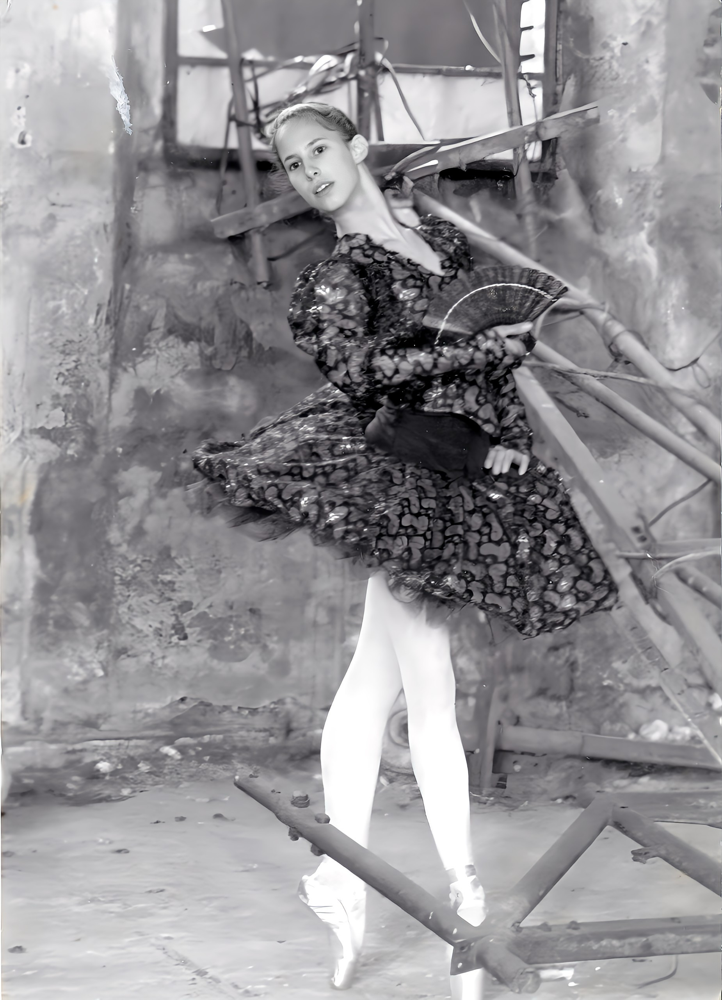
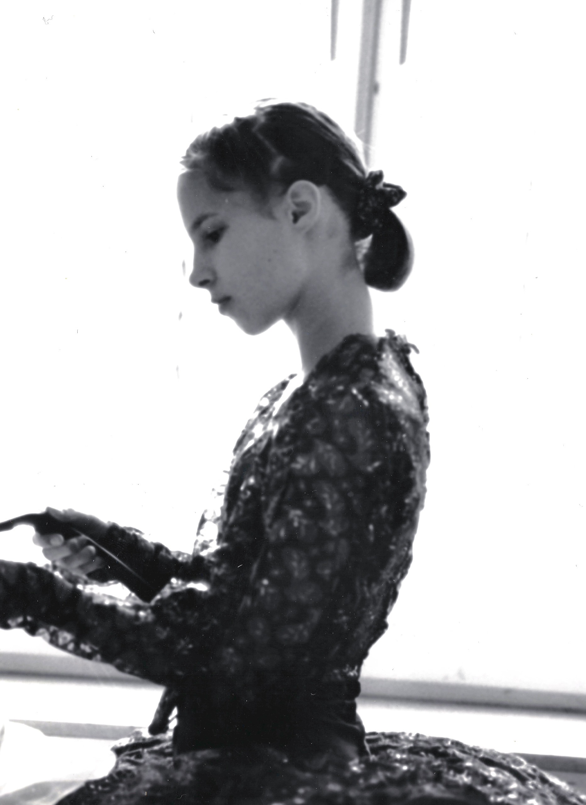
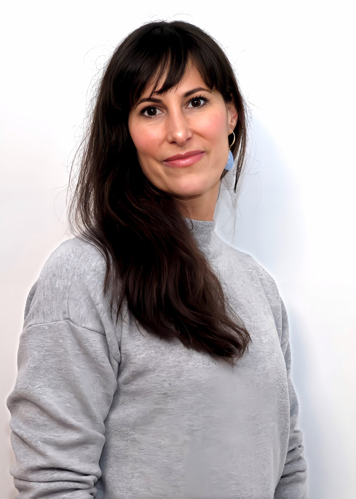

Ich rede nicht
über diesen Zustand.
Ich habe ihn im Körper erlebt.


München · Bayerisches Staatsballett
Ich habe Ballett getanzt,
solange ich denken kann.
Nicht als Hobby. Als Welt. Mit 13 nach München. Heinz-Bosl-Stiftung, Talentschmiede des Bayerischen Staatsballetts. Präzision. Haltung. Kontrolle. Leistung, die niemand hinterfragt, solange sie funktioniert.
Irgendwann hat der Körper nein gesagt. Nicht laut. Aber eindeutig.
Mit 15 die Frage von John Neumeier (Choreograf, Leiter des Hamburger Balletts):
„Du kannst. Aber willst du das hier wirklich?"
Ich habe mich selbst abgemeldet. Und bin nach Hause gefahren.
Jeder Schritt
war eine Schule.
Diplom-Informationswissenschaften
Tiefenerschließung. Semantische Suche. Hierarchien, Datenbanklogik, Wenn-dann-Bedingungen. Präzise Strukturen statt ungefähres Verstehen. Das Studium hat mir eine Denkweise gegeben, die bis heute in jeder Sitzung präsent ist: Ordnung herstellen, wo andere nur Komplexität sehen.
ALL-AACHT™
by Great Grandmaster Sigung Birol Bariş Özden · SIMO und Instruktorin · Über 20 Jahre
Kampfkunst nicht als Sport. Als Körpersystem. Hier zeigt sich, was kein Gespräch zeigt: wie ein Mensch unter echtem Druck reagiert. Schneller als jede Entscheidung. Bevor der Kopf weiß was passiert.
Das ist kein Training. Das ist Biologie.
Wer unter echtem Druck steht, zeigt sein System. Nicht sein Denken.
Elan 'N' Motion™
Chef-Ausbilderin · by ALL-AACHT™
Als Chef-Ausbilderin: Faszientraining, Atemarbeit, PSOAS-Ausrichtung, somatische Bewegung. Der Körper ist kein Problem. Er ist der präziseste Hinweis, den es gibt.
Was er zeigt, entsteht woanders. Irgendwann kommt man nicht weiter, egal wie präzise die Körperarbeit ist. Das war der Punkt, der mich zur Yager Mind Matrix geführt hat.
Der direkte Zugang
Zertifizierung · Yager Mind Matrix®
Körperbasierte Arbeit hat eine Grenze. Irgendwann bleibt etwas, das tiefer sitzt. Die Ausbildung in der Yager Mind Matrix® hat mir den Zugang zu dieser Ebene gegeben.
Kein Erinnern. Kein Analysieren. Kein Durchleben. Das System weiß selbst, was sich verändern will. Das hat mich überzeugt.
Bewusstseinsarchitektur
Nicht eine weitere Qualifikation. Das Ergebnis aus allem.
Ballett hat mir Körperbewusstsein gegeben. Informationswissenschaft hat mir Systemdenken gegeben. Kampfkunst hat mir gezeigt wie ein Mensch unter Druck wirklich reagiert. Yager hat mir den Zugang zur Ebene gegeben, die darunter liegt.
Bewusstseinsarchitektur ist die Haltung aus der ich arbeite. Nicht die Summe der Teile. Sondern was entsteht, wenn sie zusammenfließen.
Warum ich.
Zwanzig Jahre Körperarbeit mit Frauen. Faszien, Atem, Bewegung, Kampfkunst. Meine Klientinnen gingen leichter raus als sie reinkamen. Und ich hatte am nächsten Morgen die Kopfschmerzen.
Ich habe erklärt, was ich selbst nicht konnte. Ich habe gesehen, was bei anderen blockiert ist. Und bei mir auf dieselbe Stelle gestarrt, seit Jahren.
Irgendwann habe ich aufgehört, darum herumzuarbeiten. Die Yager Mind Matrix® Ausbildung hat mir den Zugang zu der Ebene gegeben, auf der es entsteht. Das ist die Grundlage, nicht das Versprechen. Die zwanzig Jahre davor geben mir den Blick.
Ich verändere nicht was sichtbar ist.
Ich verändere die Struktur aus der es entsteht.
Ich kenne die Stelle, an der dein Handwerk aufhört. Weil ich dort selbst war.

Das Fundament.
1:1 Begleitung. Online. Weltweit.
-
Bewusstseinsarchitektur Eigener Ansatz · Arbeit direkt an der Struktur des Unterbewusstseins · 1:1 online
-
Ausbildung · Yager Mind Matrix® Zugang zur Unterbewusstseinsebene · ohne Analyse, ohne Retraumatisierung
-
ALL-AACHT™ Kampfkunst und Selbstschutz SIMO und Instruktorin · Über 20 Jahre · Kampfkunstsystem von Sigung Birol Bariş Özden
-
Elan 'N' Motion™ by ALL-AACHT™ Chef-Ausbilderin · Faszien, Atem, PSOAS, somatische Bewegung
-
Faszien · PSOAS · Atem · Somatik Körperbasierte Arbeit mit Frauen
-
Diplom-Informationswissenschaftlerin Tiefenerschließung · Semantik · Strukturanalyse
-
Klassisches Ballett Bayerisches Staatsballett München
Ich helfe Frauen dabei, für ihren Wert einzustehen. Und konnte selbst nicht meinen Preis nennen, ohne sofort nachzugeben, sobald jemand gezögert hat. Das hat mich wahnsinnig gemacht. Weil ich genau wusste was da passiert. Und es trotzdem nicht stoppen konnte. Nach unserer Arbeit war das anders. Ich nenne meinen Preis. Ich habe ihn sogar erhöht. Nicht weil ich mutiger geworden bin. Sondern weil der innere Widerstand einfach nicht mehr da ist.
Hanna · Coach für Selbstwert und Positionierung